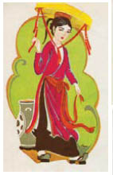

Những mặt tiền mưa nắng dãi dầu. Những cây cột gãy đổ. Những cổng vào có mái vòm. Những cầu thang chẳng dẫn đến đâu. Ngay cả bộ xương còn sót lại của Thành Phố Chết cũng cho thấy nó đã từng là một thành phố tráng lệ đến dường nào. Họ lần theo những con đường dốc đứng uốn lượn qua những ngôi nhà đổ sập. Bầu không khí yên lặng giữa những ngôi nhà tối tăm như một đêm không trăng. Thoạt đầu Jacob ngỡ bộ mặt đầu tiên mà anh thấy là vật trang trí, di sản của một thợ điêu khắc đá tài hoa. Nhưng chúng nhìn trừng trừng khắp nơi từ những bức tường nhợt màu như hóa thạch. Đàn ông, đàn bà, trẻ con.
Những câu chuyện là có thật. Guismund đã mang cả Thành Phố Chết theo mình. Ông ta muốn thế gian này đứng yên sau khi ông ta chết! Ông ta muốn nó được sinh ra và bị diệt vong cùng với mình! Lão Bọ thông thái.
Kẻ Tàn Sát Phù Thủy nhốt thần dân của mình trong những tảng đá xây nhà của họ. Cái gì đã giết chết họ? Hơi thở cuối cùng của ông ta? Ông ta đã chết vì lời nguyền do chính mình thốt ra? Jacob nghĩ anh nghe được giọng nói của họ trong cơn gió thổi qua những phố xá trống vắng. Ngọn gió rên rỉ và thở than, thổi những chiếc lá khô bay lượn, làm những viên đá bạc màu mưa nắng rơi khỏi mấy bức tường bị tẩy rửa trắng hếu như xương người qua hàng thế kỷ. Ánh sáng của bầy ma trơi lốm đốm trên những bức tường, chim sẻ dịch hạch ráo riết mổ giữa những viên đá lát đường vỡ nát. Ngoài ra thì những đường phố bị bỏ hoang hoàn toàn tĩnh lặng với những đường viền trang trí từ mặt người chết.
Họ đang tìm đường băng qua đống gạch vụn của một tòa tháp đã sập khi một người đàn ông nhảy ra từ sau tàn tích của một tượng đài. Jacob hất tay hắn ra trước khi hắn kịp đâm lưỡi hái gỉ sét vào lưng Cáo. Quần áo của hắn gắn đầy những mảnh thủy tinh và kim loại. Một nhà thuyết giáo. Đôi mắt của hắn trống rỗng như của những kẻ đã chết treo trên tường. Sáu kẻ khác đang đợi dưới cổng vòm đá cẩm thạch bạc phếch vì mưa gió, được xây dựng để ăn mừng chiến thắng của Guismund trước quân Albion và Lothringen. Chúng chiến đấu ngoan cường như thể đang bảo vệ một thành phố còn sống, nhưng may thay vũ khí của chúng đã cũ kỹ, và chúng cũng không được ăn uống đầy đủ cho lắm. Jacob giết được ba tên và Cáo bắn tên kế tiếp trước khi hắn kịp đẩy Jacob vào những bức tường bị yểm bùa. Những kẻ còn lại chạy trốn, nhưng một tên trong số đó dừng lại sau vài bước và thét lên một lời nguyền bằng thổ ngữ người ta vẫn dùng trong vùng núi này. Hắn không ngừng la hét cho đến khi Cáo bắn một phát cảnh cáo xuống phía trước chân hắn. Lời nguyền chỉ là một trò mê tín dị đoan, được sinh ra từ nỗi sợ hãi tuyệt vọng trước phép thuật thứ thiệt, nhưng tiếng thét thu hút thêm nhiều những hình thù rách mướp nữa. Bọn chúng trồi lên từ khắp nơi giữa đống đổ nát. Một số tên chỉ đứng đó và chằm chằm nhìn theo họ hoặc ném đá vào họ. Những tên khác nhảy ra ngáng đường họ với những ba chỉa và xẻng gỉ sét ăn cắp của một người nông dân nào đó.
Phải giết thêm bốn tên nữa thì những kẻ khác mới chịu để họ yên, nhưng Jacob chắc rằng nhiều tên khác đang chờ họ trước cung điện. Những kỵ sĩ thời hiện đại của Guismund... Jacob tự hỏi liệu có phải bùa phép đang lẩn quất trong khu thành đổ nát nói với họ phải bảo vệ nó, hay nỗi sợ hãi trước sự hữu hạn của đời người đã mang họ đến vùng đất chết này - và niềm hy vọng tìm thấy ở đây cánh cửa giúp người ta thoát khỏi kết cục không thể tránh khỏi: cái chết.
Cũng chẳng khác mấy với niềm hy vọng đã mang người đến đây, Jacob.
Họ chậm rãi tiến đến gần cung điện. Luôn luôn là những đống đổ nát cản đường họ, những cây cầu đã gãy... những bậc thang vỡ nát... Jacob tưởng như anh lại lạc vào mê cung một lần nữa. Nhưng lần này có Cáo bên cạnh anh, và ngay cả nỗi sợ phải chết cũng không thể sánh bằng nỗi lo sợ cho an nguy của cô khi anh ở trong mê cung của tên yêu râu xanh.
Đống đổ nát vây quanh họ cứ cao lên mãi đến tận bầu trời đêm. Trong vài đống đổ nát là những bức tường được xây dựng như hàng rào bằng đá. Chuồng rồng. Chúng nằm ngay phía dưới cung điện. Con đường ngày càng dốc, và Jacob cảm nhận cuộc chiến nho nhỏ với đám thuyết giáo đã làm anh kiệt sức đến thế nào. Ngươi sắp chết rồi, Jacob. Nhưng những lời ấy dường như chẳng còn ý nghĩa gì nữa, như thể anh đã nghĩ về chúng quá thường xuyên.
Một cái chuồng rồng khác. Thay vì những khuôn mặt, trên tường giờ đây là những cái mõm khổng lồ, cổ có ngạnh, những đôi cánh và đuôi có gai. Người ta kể rằng Guismund đã bắt hàng trăm con rồng để dùng trong những cuộc chiến. Thay vì cho chúng ăn đá, món mà chúng thường ăn, ông ta nuôi chúng bằng thịt nông dân và quân lính phe địch, phù thủy, người Troll, người lùn. Những thứ thức ăn ấy làm chúng phát điên, như bò bị cho ăn thịt.
Một chuồng cuối cùng. Con đường phía trước đó bị đục khoét bởi những móng vuốt khổng lồ. Những bậc thang phía cuối con đường vẫn rộng rãi hơn những bậc thang dẫn xuống hầm mộ của Guismund. Chúng hướng thẳng lên trên và cao đến nỗi cả một đạo quân có thể dàn trận trên đó. Hàng trăm bậc thang dẫn lên cánh cổng sắt, phía sau đó là hàng trăm cách để chết. Jacob không còn nhớ đã đọc được câu này ở đâu. Anh quá kiệt sức đến nỗi không thể nhớ ra anh đã đến được đây bằng cách nào. Ngực anh đau theo mỗi bước chân lên bậc thang, nhưng Cáo đi sát bên cạnh anh.
Những bậc thang dẫn đến một khu đất phủ đầy tuyết, mây sà xuống thấp đến nỗi những tháp canh của lâu đài biến mất trong sương mù. Trên những bức tường xám treo lủng lẳng những cái chuồng bằng vàng, sau song sắt những cái chuồng ấy người ta vẫn còn thấy những gì còn sót lại của những tù nhân bị Guismund giam cầm. Cả tòa lâu đài trông như chỉ vừa mới bị yểm bùa hôm qua chứ không phải từ hàng trăm năm trước.
Cánh cổng sắt nổi bật lên như một con dấu giữa những bức tường. Sắt lấp lánh như áo giáp của nhà vua. Jacob chẳng tìm thấy cái khóa hay cái then nào, chỉ có một chuỗi đầu lâu và huy hiệu mà họ đã nhìn thấy trong hầm mộ.
Những thi thể rách mướp nằm trước cánh cổng trông mới hơn những nắm xương tàn buồn bã trong lồng. Một vài cái xác có bàn tay chảy thành than hoặc cánh tay bỏng đến tận cùi chỏ. Một số xác khác có những vết cắn rất khủng khiếp. Những nhà truyền giáo tin rằng cuối cùng họ đã mở được cánh cổng vào thiên đàng cho mình, nhưng đâu ngờ đã gõ phải cửa của một phù thủy.
Jacob cảm nhận thứ bóng tối tương tự anh đã gặp trong hầm mộ, như một nắm tay thủ sẵn phía sau cánh cổng. Và tất cả những gì họ có bên mình là một nhúm tóc của tên hoàng tử và mọi điều anh đã học được trong mười hai năm săn lùng kho báu ở thế giới này. Cáo lôi một cái xác ra khỏi đường đi. Và người có cô ấy, Jacob.
Cánh cổng bắt đầu nóng đỏ lên ngay khi Cáo đến gần, như kim loại trong lò nung của thợ rèn.
Jacob lôi chiếc túi đựng nhúm tóc của Louis ra khỏi túi. Niềm hy vọng duy nhất của anh để cánh cổng cho họ đi qua như những người bằng hữu. Một hy vọng quá mong manh, Jacob. Tấm danh thiếp của Earlking dính trên túi.
Cậu không cần tóc của hoàng tử đâu.
Cáo nhìn qua vai Jacob. Màu mực xanh viết tiếp.
Cậu phải nhanh chân lên, bạn của tôi.
Lẽ ra cậu phải bắn chết gã Goyl.
Chiếc nỏ thần đã ở rất gần rồi.
Bạn. Từ ấy chưa bao giờ nghe giả tạo hơn thế. Jacob nhìn lên cánh cổng sắt. Hồng Tiên cũng đã từng rất sẵn lòng giúp đỡ anh như thế. Anh ném tấm danh thiếp đi và lôi nhúm tóc của hoàng tử ra khỏi túi.
Một nhà thuyết giáo khác lại hiện ra trên những bậc thang. Cáo chĩa súng về phía hắn, nhưng hắn vẫn tiếp tục đi cho đến khi thấy những cái xác. Chiếc áo khoác bẩn thỉu của hắn gắn đầy kim loại và thủy tinh, trông như một áo giáp thực thụ. Cánh cổng đến thiên đường. Cáo đánh ngã hắn trong lúc hắn đứng đó sửng sốt nhìn những xác chết. Jacob và Cáo đã ở đây quá lâu. Chỉ vài giờ nữa thôi là họ sẽ bắt đầu đính thủy tinh và thiếc lên quần áo mình.
Jacob bước một bước đến gần cánh cổng. Nó cao đến nỗi một người khổng lồ có thể vác anh trên vai mà đi qua đó. Hầu hết những lâu đài trong thời Guismund đều có những cánh cổng có kích thước của người khổng lồ. Một vài người trong số họ phục vụ cho Guismund.
Jacob cho tay vào chiếc túi có chứa tóc của hoàng tử. Ngón tay anh sẽ bám mùi nước hoa của Louis. Không phải là một ý nghĩ dễ chịu. Anh siết chặt lọn tóc vàng tro. Louis chỉ là một hậu duệ xa xôi của Guismund, vậy nên tóc của hắn sẽ chỉ có tác dụng như một mật khẩu được thì thầm khe khẽ, nhưng đó là hy vọng duy nhất của họ để không bị xem là kẻ thù.
Jaco sẽ không ngạc nhiên nếu da ngón tay anh bị cánh cổng nung chảy ra. Có những huyền thoại kể về những con quái vật biến hình từ sắt của cánh cổng, và những xác chết xung quanh Jacob trông có vẻ như họ đã từng gặp chúng. Nhưng ngay khi anh vươn tay ra, kim loại liền vỡ tung như lớp vỏ của trái cây chín nhũn. Cánh cổng chia làm hai cánh, trên mỗi cánh mọc ra một nắm đấm cửa như nụ hoa bằng sắt.
Chúng uốn thành hình đầu sói, và trong khi răng nanh tiếp tục mọc ra từ những chiếc mõm nhọn hoắt, Jacob cảm nhận làn gió vẫn thổi trên kim loại nóng đỏ cho đến khi cả cánh cổng lại lấp lánh màu xám lạnh.
Cậu không cần tóc của hoàng tử đâu.
Earlking có ý gì khi nói thế? Một lời dối trá nhằm giết anh như những người đàn ông rách mướp nằm kia? Gì cũng được...
Anh và Cáo nhìn nhau.
Niềm đam mê đi săn. Có phải đó là tất cả những gì đã buộc họ lại với nhau?
Cô mỉm cười với anh. Không sợ hãi. Vậy mà Jacob như vẫn còn thấy nỗi sợ hãi màu trắng mà anh đã đưa cô uống trong căn phòng của tên yêu râu xanh. Trong những tháng vừa qua cả hai người bọn họ đều đã học được, đâu là giới hạn buộc họ phải biết sợ.
Anh đặt cả hai tay lên hình đầu sói. Anh nghĩ mình phải vận hết chút sức lực còn sót lại để mở cánh cổng sắt nặng nề, nhưng chúng mở ra mà không gặp chút trở ngại nào, với một tiếng thở dài nghe như tiếng thở khò khè phát ra từ cái miệng mạ vàng của thủ cấp Guismund.
Một làn khí lạnh giá thổi về phía họ, và bóng tối đen đặc đang chờ sau cánh cửa làm Jacob chẳng còn trông thấy gì chỉ sau một vài bước. Nhưng Cáo nắm lấy cánh tay anh cho đến lúc mắt anh quen dần với bóng tối. Cái sảnh mà họ mới bước vào trống trơn, ngoại trừ mấy cây cột chống đỡ một mái nhà lẩn khuất đâu đó phía trên họ. Tiếng bước chân họ vọng lại giữa những bức tường cao vút như tiếng vỗ cánh của một chú chim lạc đàn.
Cáo nhìn quanh tìm kiếm khi tiếng khóc của một đứa trẻ vang lên trong bầu không khí im lặng. Lẫn trong tiếng khóc là tiếng thét của một phụ nữ, tiếng tranh cãi của những người đàn ông.
“Đứng yên!” Jacob thì thầm với Cáo.
Những giọng nói nhỏ dần như thể họ đang đi khỏi đó, nhưng vẫn còn nghe được loáng thoáng trong vài giờ đồng hồ trước khi chúng biến mất hẳn. Tiếng bước chân của những người chết. Một bùa phép của những phù thủy hắc ám. Mỗi bước chân của họ làm sống lại quá khứ: những lời đã được thốt ra, thì thầm hay la thét trong lâu đài này. Và không chỉ có lời nói. Nỗi đau, cơn giận dữ, nỗi thất vọng, sự điên loạn. Mỗi cảm xúc đều có hình dáng. Bóng tối bao bọc quanh Jacob và Cáo được dệt nên từ những sợi chỉ mang điềm gở. Họ phải giữ im lặng, hoặc họ sẽ chết ngạt trong đó.
Trong bóng tối, ba hành lang hiện ra trước mắt Jacob. Theo như anh thấy thì chúng trông giống hệt nhau. Anh lỗi trong túi ra hai cây nến màu vàng nhạt mà lão Valiant đã đưa anh. Cáo và anh đã từng sử dụng loại nến này ở những nơi khác, khi họ phải chia nhau ra mỗi người một hướng. Nếu một trong hai cây nến tắt, cây kia cũng sẽ tắt theo. Cáo lấy trong túi ra mấy que diêm. Rồi cô cầm lấy cây nến đang cháy trên tay anh mà không nói lời nào. Những giọng nói lại vang to hơn khi tiếng bước chân họ vọng lại trên những phiến đá lát sàn. Guismund giết hầu hết những phù thủy mà ông ta đã uống máu và ăn cắp phép thuật trong chính hầm ngục của tòa lâu đài này. Tiếng la thét của những người phụ nữ lớn đến nỗi rõ ràng Cáo khó lòng đi tiếp được. Cô quay lại nhìn Jacob lần cuối, trước khi ánh sáng phát ra từ cây nến của cô biến mất trong một hành lang. Cô chọn cái chính giữa.
Trái hay phải đây, Jacob? Anh rẽ trái.